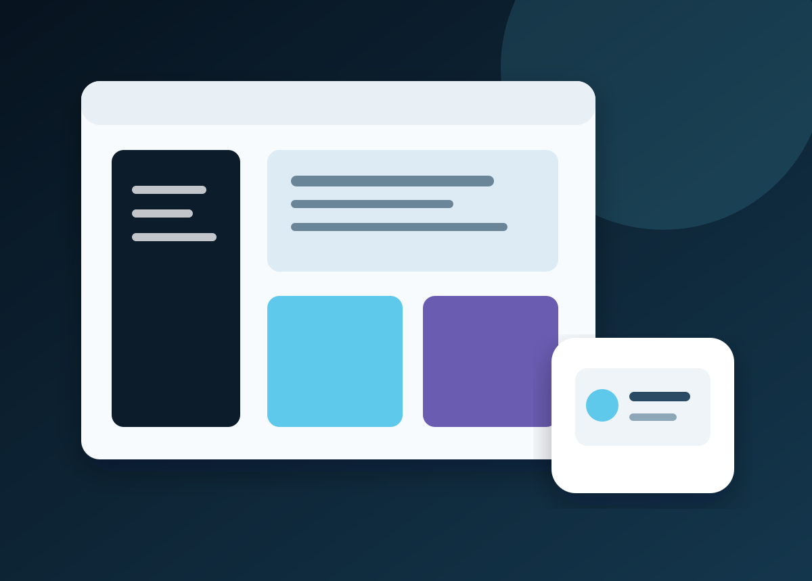

Custom web applications
Customer and partner portals, operations dashboards, booking and service systems, marketplaces and role-based business applications.
VSN designs and develops web applications, mobile apps, internal tools, SaaS platforms and custom software with a focus on usability, security and maintainability.

We start with the users, decisions and work the software must support. That keeps feature choices, platform selection and release boundaries tied to a business need instead of an arbitrary technology list.
Customer and partner portals, operations dashboards, booking and service systems, marketplaces and role-based business applications.
Multi-user subscription products with account journeys, workspaces, plans, permissions, administration and product-specific usage rules.
Staff tools that organize approvals, requests, records and recurring processes, with access based on each role’s responsibilities.
Connect existing software, payment services, CRMs, commerce systems, identity providers and approved third-party platforms.
Reduce manual handoffs through defined triggers, validation, routing, notifications and human approval where a decision needs review.
Improve, extend or replace an existing application in agreed stages, with data ownership, migration, continuity and rollback considered up front.
A SaaS product has to support the work behind the interface: customer onboarding, account boundaries, support, billing choices and safe changes over time.
Depending on requirements, a product scope can cover tenant separation, identity and access, workspace roles, subscription-plan rules, usage limits, administration, audit history, notifications and customer-support flows. Payment-provider configuration, taxes, regulatory duties and third-party fees are separately confirmed; adding checkout alone does not settle them.
The proposal defines a release that can be reviewed and operated. Discovery depth, implementation phases, acceptance checks and after-launch support are selected for the size and risk of the system.
Map users, workflows, constraints, existing systems, risks and the first release’s success criteria.
Agree the experience, data boundaries, system components, integrations, technology and implementation plan.
Deliver defined milestones with demonstrations, decisions, tests and written acceptance criteria.
Coordinate deployment, documentation, access handover and an agreed support or maintenance arrangement.
VSN works across modern web and application stacks. The final choice follows performance, integration, hosting, hiring and lifecycle needs.
React, Vue.js, Angular and other suitable UI approaches for responsive customer, staff and administration experiences.
Laravel, Symfony, Node.js and other agreed server frameworks for business rules, API contracts and integrations.
Relational data modelling, approved storage, background work, testing, deployment coordination and operational visibility scoped to the solution.
Stack is project-specific: named technologies are options, not a promise to use every platform in one build. Open-source packages, hosted services and paid provider plans keep their own terms and costs.
Testing can include agreed unit, API, integration, browser, device, accessibility, performance and regression checks. Security work is scoped to the system and access provided; it is not a certification or a guarantee that software is vulnerability-free.
Source-code delivery, reusable components, third-party licences, environments, backups, monitoring, documentation, warranty and maintenance responsibilities are written into the proposal or agreement. Hosting, provider usage, marketplace charges and ongoing support are separate unless expressly included.
For website-led work, see Web Development & E-commerce. For mobile-first products, see Mobile App Development. AI features are scoped through AI Solutions.
Useful business rules, an authorized decision-maker, timely feedback, approved access to relevant systems, representative test cases and ownership of provider accounts or spending. Do not send passwords, payment details or sensitive customer records in an initial enquiry.
Share the product type, users, current systems and rough timing to help us identify the next scoping conversation.
Submitting prepares a WhatsApp message for you to review and send. This website does not store the brief. Do not include passwords, tax IDs, payment data or confidential records.
Final features, responsibilities, fees and delivery dates are confirmed in a written scope before implementation starts.
Custom software is designed for a particular organisation or workflow. SaaS is a product model in which a provider operates a service for multiple customers, often with accounts, workspaces and subscription rules. A SaaS product still needs its own agreed support, security, billing and data model.
We clarify users, workflows, integrations, risks and the minimum useful release. The proposal then breaks work into defined deliverables, assumptions, acceptance checks, milestones, fees and exclusions. Larger or uncertain projects may start with a separately scoped discovery phase.
We can scope tenant-aware workspaces, account boundaries, roles, administration and subscription-related features. The design depends on data sensitivity, customer isolation, expected scale, support model and assigned responsibilities.
Yes. Work can focus on integration, extensions, migration, reliability improvements or a defined workstream alongside your team. Access, code ownership, environments and acceptance responsibilities are agreed first.
We recommend a stack after considering the product, integrations, hosting, operating model, delivery constraints and future maintenance. A proposal identifies the chosen technologies and third-party dependencies.
Only when the written scope says so. Hosting, provider plans, marketplace charges, API usage, licences, maintenance and support are listed separately with their owner and responsibilities.
The proposal states testing and review activities that fit the system, such as API, integration, browser, accessibility, performance or regression checks. Security work is bounded by access and scope and is not represented as certification or a guarantee against vulnerabilities.
Source-code delivery, client-specific work, reusable components, third-party dependencies and licence obligations are specified in the agreement. Confirm ownership and handover terms before the project begins.
AI features can be assessed through a separate use-case, data and risk review, then scoped for a suitable workflow. See the AI Solutions page for evaluation, human review and provider boundaries.